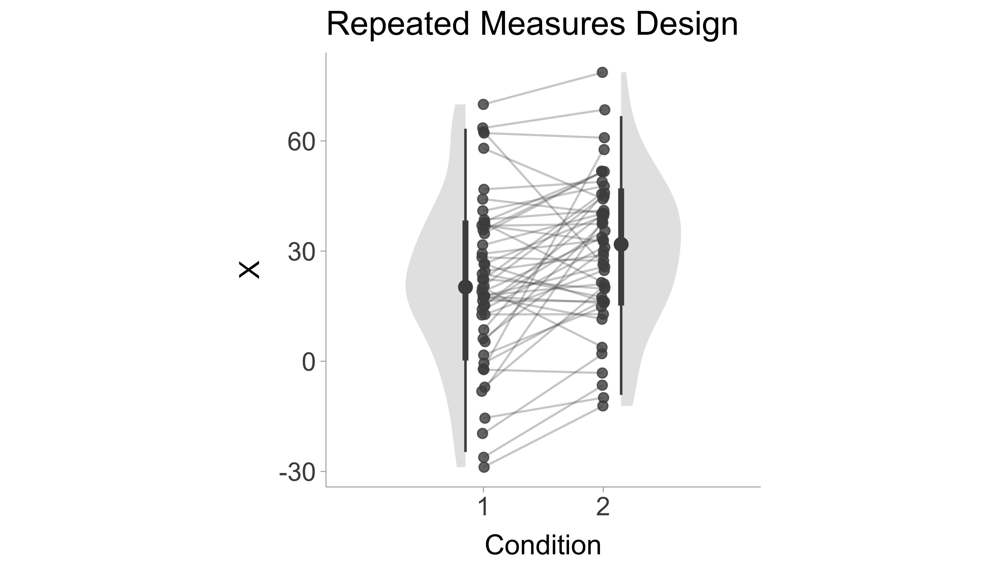

T-tests are the most commonly used statistical tests for examining differences between group means, or examining a group mean against a constant. Calculating effect sizes for t-tests is fairly straightforward. Nonetheless, there are cases where crucial figures for the calculation are missing (which happens quite often in older articles), and therefore we document methods that make use of partial information (e.g., only the M and the SD, or only the t-statistic and df) for the calculation. There are multiple types of effect sizes used to calculate standardized mean differences (i.e., Cohen’s \(d\)), yet researchers very often do not identify which type of \(d\) value they are reporting (see Lakens 2013). Here we document the equations and code necessary for calculating each type of \(d\) value compiled across multiple sources (Becker 1988; Cohen 1988; Lakens 2013; Caldwell 2022; Glass, McGaw, and Smith 1981). A \(d\) value calculated from a sample will also contain sampling error, therefore we will also show the equations to calculate the standard error. The standard allows us to then calculate the confidence interval. For each formulation in the sections below, the confidence interval will be able to be calculated in the same way, that is,
\[
CI_d = d \pm 1.96\times SE
\]
Lastly, we will supply example R code so you can apply to your own data.
8.1 Single Group Designs
For a single group design, we have one group and we want to compare the mean of that group to some constant, \(C\) (i.e., a target value). The standardized mean difference for a single group can be calculated by,
\[
d_s = \frac{M-C}{S_1}
\] A positive \(d_s\) value would indicate that the mean of group 1 is larger than the target value, \(C\). This formulation assumes that the sample is drawn from a normal distribution. The standardizer (i.e., the denominator) is the sample standard deviation. The corresponding standard error for \(d_s\) is,
In R, we can use the d.single.t function from the MOTE package to calculate the single group standardized mean difference.
# Install packages if not already installed:# install.packages('MOTE')# Cohen's d for one group# For example:# Sample Mean = 30.4, SD = 22.53, N = 96# Target Value, C = 15library(MOTE)stats <-d.single.t(m =30.4,u =15,sd =22.53,n =96)# print just the d value and confidence intervalsdata.frame(d =apa(stats$d), dlow =apa(stats$dlow), dhigh =apa(stats$dhigh))
d dlow dhigh
1 0.684 0.460 0.904
As you can see, the output shows that the effect size is \(d_s\) = 0.68, 95% CI [0.46, 0.90]. Note the apa function in MOTE takes a value and returns an APA formatted effect size value (i.e., leading zero and three decimal places).
8.2 Two Groups Design
8.2.1 Standardize by Pooled Standard Deviation (\(d_p\))
For a two group design (i.e., between-groups design), we want to compare the means of two groups (group 1 and group 2). The standardized mean difference between two groups can be calculated by,
\[
d_p = \frac{M_1-M_2}{S_p}.
\]
A positive \(d_p\) value would indicate that the mean of group 1 is larger than the mean of group 2. Dividing the mean difference by the pooled standard deviation, \(S_p\), is the classic formulation of Cohen’s \(d\). The pooled standard deviation, \(S_p\), can be calculated as the square root of the average variance (weighted by the degrees of freedom, \(df=n-1\)) of group 1 and group 2:
Note that the term variance refers to the square of the standard deviation (\(S^2\)). Cohen’s \(d_p\) has is related to the t-statistic from an independent samples t-test. In fact, we can calculate the \(d_p\) value from the \(t\)-statistic with the following formula:
\[
d = t\sqrt{\frac{2(n_1+n_2)}{n_1 n_2(n_1+n_2-2)}}.
\]
In R, we can use the d.ind.t function from the MOTE package to calculate the two group standardized mean difference. Since we have already loaded in the MOTE package, we do not need to again.
# Cohen's d for two independent groups# given means and SDs# For example:# Group 1 Mean = 30.4, SD = 22.53, N = 96# Group 2 Mean = 21.4, SD = 19.59, N = 96stats <-d.ind.t(m1 =30.4,m2 =21.4,sd1 =22.53,sd2 =19.59,n1 =96,n2 =96,a =0.05)# print just the d value and confidence intervalsdata.frame(d =apa(stats$d), dlow =apa(stats$dlow), dhigh =apa(stats$dhigh))
d dlow dhigh
1 0.426 0.140 0.712
The output shows that the effect size is \(d_p\) = 0.43, 95% CI [0.14, 0.71].
8.2.2 Standardize by Control Group Standard Deviation (\(d_{\Delta}\))
When two groups differ substantially in their standard deviations, we can instead standardize by the control group standard deviation (\(S_C\)), such that,
\[
d_{\Delta} = \frac{M_T-M_C}{S_C}.
\]
Where the subscripts, \(T\) and \(C\), denotes the treatment group and control group, respectively. This formulation is commonly referred to as Glass’ \(\Delta\)(Glass 1981). The standard error for \(d_{\Delta}\) can be defined as,
Notice that when we only standardize by the standard deviation of the control group (rather than pooling), we he will have less degrees of freedom (\(df=n_C-1\)) and therefore more sampling error than we do when we divide by the pooled standard deviation (\(df= n_T + n_C - 2\)).In R, we can use the delta.ind.t.diff function from the MOTE package to calculate \(d_\Delta\).
# Cohen's dz for difference scores# given difference score means and SDs# For example:# Control group Mean = 30.4, SD = 22.53, N = 96# Treatment group Mean = 21.4, SD = 19.59, N = 96# correlation between conditions: r = .40stats <-delta.ind.t(m1 =30.4,m2 =21.4,sd1 =22.53,sd2 =19.59,n1 =96,n2 =96,a =0.05)# print just the d value and confidence intervalsdata.frame(d =apa(stats$d), dlow =apa(stats$dlow), dhigh =apa(stats$dhigh))
d dlow dhigh
1 0.399 0.140 0.712
8.3 Repeated Measures Designs
In a repeated-measures design, the same subjects (or items, etc.) are measured on two or more separate occasions, or in multiple conditions within a single session, and we want to know the mean difference between those occasions or conditions (Baayen, Davidson, and Bates 2008; Barr et al. 2013). An example of this would be in a pre/post comparison where subjects are tested before and after undergoing some treatment (see Figure 8.1 for a visualization). A standardized mean difference in a repeated-measures design can take on a few different forms that we define below.

Figure 8.1: Figure displaying simulated data of a repeated measures design, the x-axis shows the condition (e.g., pre-test and post-test) and y-axis is the scores. Lines connect the change within subject from one condition to the next.
8.3.1 Difference Score \(d\) (\(d_z\))
Instead of comparing the means of two sets of scores, a within subject design allows us to subtract the scores obtained in condition 1 from the scores in condition 2. These difference scores (\(X_{\text{diff}}=X_2-X_1\)) can be used similarly to the single group design (if the target value was zero, i.e., \(C=0\)) such that,
Where the difference between this formulation and the single group design is the nature of the scores (difference scores rather than raw scores). The convenient thing about \(d_z\) is that it has a straight-forward relationship with the \(t\)-statistic, \(d_z=\frac{t}{\sqrt{n}}\). This makes it very useful for power analyses. If the standard deviation of difference scores are not accessible, then it can be calculated using the standard deviation of condition 1 (\(S_1\)), the standard deviation of condition 2 (\(S_2\)), and the correlation between conditions (\(r\)):
\[
S_{\text{diff}}=\sqrt{S^2_1 + S^2_2 - 2 r S_1 S_2}
\]
It is important to note that when the correlation between groups is large, then the \(d_z\) value will also be larger, whereas a small correlation will return a smaller \(d_z\) value. The standard error of \(d_z\) can be calculated similarly to the single group design such that,
In R, we can use the d.ind.t.diff function from the MOTE package to calculate \(d_z\).
# Cohen's dz for difference scores# given difference score means and SDs# For example:# Difference Score Mean = 21.4, SD = 19.59, N = 96library(MOTE)stats <-d.dep.t.diff(m =21.4,sd =19.59,n =96,a =0.05)# print just the d value and confidence intervalsdata.frame(d =apa(stats$d), dlow =apa(stats$dlow), dhigh =apa(stats$dhigh))
d dlow dhigh
1 1.092 0.837 1.344
The output shows that the effect size is \(d_z\) = 1.09, 95% CI [0.84, 1.34].
8.3.2 Repeated Measures \(d\) (\(d_{rm}\))
For a within-group design, we want to compare the means of scores obtained from condition 1 and condition 2. The repeated measures standardized mean difference between the two conditions can be calculated by,
\[
d_{rm} = \frac{M_2-M_1}{S_w}.
\]
A positive \(d_{rm}\) value would indicate that the mean of condition 2 is larger than the mean of condition 1. The standardizer here is the within-subject standard deviation, \(S_w\). The within-subject standard deviation can be defined as,
\[
S_{\text{diff}}=\sqrt{\frac{S^2_1 + S^2_2 - 2 r S_1 S_2}{2(1-r)}}.
\]
We can also express \(S_w\) in terms of \(S_{\text{diff}}\),
Furthermore, we can even express \(d_{rm}\) in terms of \(d_z\),
\[
d_{rm} = d_z \times \sqrt{2(1-r)}.
\]
Ultimately the \(d_{rm}\) is more appropriate as an effect size estimate for use in meta-analysis whereas \(d_z\) is more appropriate for power analysis (Lakens 2013). The standard error for \(d_{rm}\) can be computed as,
In R, we can use the d.ind.t.rm function from the MOTE package to calculate the repeated measures standardized mean difference (\(d_{rm}\)).
# Cohen's d for repeated measures# given means and SDs and correlation# For example:# Condition 1 Mean = 30.4, SD = 22.53, N = 96# Condition 2 Mean = 21.4, SD = 19.59, N = 96# correlation between conditions: r = .40stats <-d.dep.t.rm(m1 =30.4,m2 =21.4,sd1 =22.53,sd2 =19.59,r = .40,n =96,a =0.05)# print just the d value and confidence intervalsdata.frame(d =apa(stats$d), dlow =apa(stats$dlow), dhigh =apa(stats$dhigh))
d dlow dhigh
1 0.425 0.215 0.633
The output shows that the effect size is \(d_{rm}\) = 0.42, 95% CI [0.21, 0.63].
8.3.3 Average Variance \(d\) (\(d_{av}\))
The problem with \(d_{z}\) and \(d_{rm}\), is that they require the correlation between conditions. In practice, correlations between conditions are frequently not reported. An alternative estimator of Cohen’s \(d\) in repeated measures design is to simply use the classic variation of cohen’s \(d\) (i.e., pooled standard deviation). In a repeated measures design, the sample size does not change between conditions. Therefore weighting the variance of condition 1 and condition 2 by their respective degrees of freedom (i.e., \(df=n-1\)) is an unnecessary step. Instead, we can standardize by the square root of the average the variances of condition 1 and 2:
This formulation is convenient especially when the correlation is not present, however without the correlation it fails to take into account the consistency of change between conditions. The standard error of the \(d_{av}\) can be expressed as,
In R, we can use the d.ind.t.rm function from the MOTE package to calculate the repeated measures standardized mean difference (\(d_{rm}\)).
# Cohen's d for repeated measures (average variance)# given means and SDs # For example:# Condition 1 Mean = 30.4, SD = 22.53, N = 96# Condition 2 Mean = 21.4, SD = 19.59, N = 96stats <-d.dep.t.avg(m1 =30.4,m2 =21.4,sd1 =22.53,sd2 =19.59,n =96,a =0.05)# print just the d value and confidence intervalsdata.frame(d =apa(stats$d), dlow =apa(stats$dlow), dhigh =apa(stats$dhigh))
d dlow dhigh
1 0.427 0.217 0.635
The output shows that the effect size is \(d_{av}\) = 0.43, 95% CI [0.22, 0.64].
8.3.4 Becker’s \(d\) (\(d_b\))
An even simpler variant of repeated measures \(d\) value comes from Becker (1988). Becker’s \(d\) standardizes simply by the pre-test standard deviation when the comparison is a pre/post design,
The convenient interpretation of “change in baseline standard deviations” can be quite useful. We can also obtain the standard error with,
\[
SE_{d_b} = \sqrt{\frac{2(1-r)}{n}+\frac{d_b^2}{2n}}
\] Notice that even though the formula for calculating \(d_b\) did not include the correlation coefficient, the standard error does.
In base R, we can calculate Becker’s formulation of standardized mean difference using the equations above.
# Install the package below if not done so already# install.packages(escalc)# Cohen's d for repeated measures (becker's d)# given means, the pre-test SDs, and the correlation# For example:# Pre-test Mean = 21.4, SD = 19.59, N = 96# Post-test Mean = 30.4, N = 96# Correlation between conditions: r = .40Mpre <-21.4Mpost <-30.4Spre <-19.59r <- .40n <-96a <-0.05d <- (Mpost - Mpre) / SpreSE <-sqrt( 2*(1-r)/n + d^2/(2*n) )stats <-data.frame(d = d,dlow = d -1.96*SE,dhigh = d +1.96*SE)# print just the d value and confidence intervalsdata.frame(d =apa(d), dlow =apa(d -1.96*SE), dhigh =apa(d +1.96*SE))
d dlow dhigh
1 0.459 0.231 0.688
The output shows that the effect size is \(d_{rm}\) = 0.46, 95% CI [0.23, 0.69].
8.3.5 Comparing Repeated Measures \(d\) values
Figure 8.2 shows repeated measures designs with a high (\(r=\) .95) and low (\(r=\) .05) correlation between conditions. Let us fix the standard deviations and means for both conditions (i.e., high and low correlation) and only vary the correlation. Now we can compare the repeated measures estimators based on these two conditions shown in Figure 8.2:
High correlation:
\(d_z=1.24\)
\(d_{rm}=0.39\)
\(d_{av}=0.43\)
\(d_{b}=0.40\)
Low correlation:
\(d_z=0.31\)
\(d_{rm}=0.43\)
\(d_{av}=0.43\)
\(d_{b}=0.40\)
We notice that the correlation greatly influences \(d_z\) more than any other estimator. The \(d_{rm}\) value has very little change, whereas \(d_{av}\) and \(d_{b}\) do not take into account the correlation at all.
Figure 8.2: Figure displaying simulated data of a repeated measures design, the x-axis shows the condition (e.g., pre-test and post-test) and y-axis is the scores. Lines connect the change within subject from one condition to the next.
8.4 Small Sample Bias in \(d\) values
All the estimators of \(d\) listed above are biased estimates of the population \(d\) value, specifically they all over-estimate the population value in small sample sizes. To adjust for this bias, we can apply a correction factor based on the degrees of freedom. The degrees of freedom will largely depend on the estimator used. The degrees of freedom for each estimator is listed below:
Single Group design (\(d_s\)): \(df = n-1\)
Between Groups - Pooled Standard Deviation (\(d_p\)): \(df = n_1+n_2-2\)
Between Groups - Control Group Standard Deviation (\(d_\Delta\)): \(df = n_C-1\)
With the appropriate degrees of freedom, we can use the following correction factor, \(CF\), to obtain an unbiased estimate of the population standardized mean difference:
Where \(\Gamma(\cdot)\) is the gamma function. An approximation of this complex formula given by Hedges (1981) can be written as \(CF\approx 1-\frac{3}{4\cdot df -1}\). In R, this can be calculated using,
This correction factor can then be applied to any of the estimators mentioned above,
\[
d^* = d\times CF
\]
The corrected \(d\) value, \(d^*\), is commonly referred to as Hedges’ \(g\) or just \(g\). To avoid notation confusion we will just add an asterisk to \(d\) to denote the correction. We also need to correct the standard error for \(d^*\)
\[
SE_{d^*} = SE_{d} \times CF
\]
These standard errors can then be used to calculate the confidence interval of the corrected \(d\) value,
\[
CI_{d*} = d^* \pm 1.96\times SE_{d^*}
\]
# Example:# Cohen's d = .50, SE = .10d = .50SE = .10# correct d value and CIs small sample biasd_corrected <- d * CFSE_corrected <- SE * CFdlow_corrected <- d_corrected -1.96*SE_correcteddhigh_corrected <- d_corrected +1.96*SE_corrected# print just the d value and confidence intervalsdata.frame(d =apa(d), dlow =apa(dlow_corrected), dhigh =apa(dhigh_corrected))
d dlow dhigh
1 0.500 0.298 0.681
The output shows that the corrected effect size is \(d^*\) = 0.50, 95% CI [0.30, 0.68].
Baayen, R Harald, Douglas J Davidson, and Douglas M Bates. 2008. “Mixed-Effects Modeling with Crossed Random Effects for Subjects and Items.”Journal of Memory and Language 59 (4): 390–412.
Barr, Dale J, Roger Levy, Christoph Scheepers, and Harry J Tily. 2013. “Random Effects Structure for Confirmatory Hypothesis Testing: Keep It Maximal.”Journal of Memory and Language 68 (3): 255–78.
Becker, Betsy J. 1988. “Synthesizing Standardized Mean-Change Measures - UConn Library.”British Journal of Mathematical and Statistical Psychology 41 (2): 257278. https://doi.org/https://doi.org/10.1111/j.2044-8317.1988.tb00901.x.
Hedges, Larry V. 1981. “Distribution Theory for Glass’s Estimator of Effect Size and Related Estimators.”Journal of Educational Statistics 6 (2): 107–28. https://doi.org/10.3102/10769986006002107.